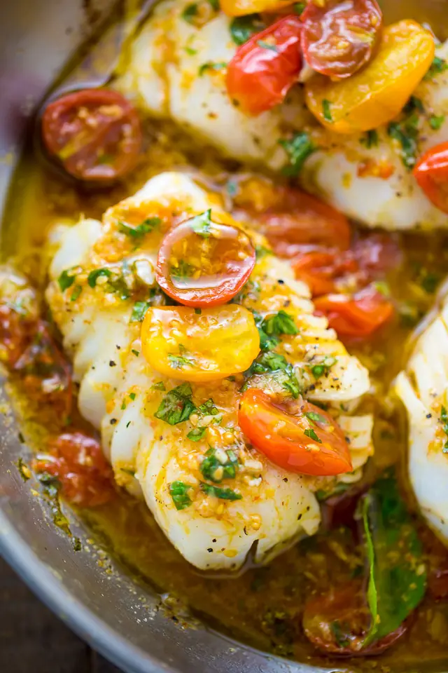

Pan Seared Cod in White Wine Tomato Basil Sauce
- Total time40 mins
- Serves4
- Ingredients14
- Steps7

Ingredients
For the White Wine Tomato Basil Sauce
- 2 tablespoons (28ml) olive oil
- 1/4 teaspoon crushed red pepper flakes
- 3 large cloves of garlic finely minced
- 1 pint juicy cherry tomatoes sliced in half
- 1/4 cup (57ml) dry white wine *add an extra 1/4 cup for a saucier sauce
- 1/2 cup fresh basil finely chopped
- 2 tablespoons (28ml) fresh lemon juice
- 1/2 teaspoon fresh lemon zest
- 1 teaspoon granulated sugar
- 1/2 teaspoon salt (more to taste)
- 1/4 teaspoon fresh ground black pepper (more to taste)
For the Cod
- 2 tablespoons (28ml) olive oil
- 1 and 1/2 pounds fresh cod cut into 4 fillets
- Salt and pepper
Directions
For the sauce
- In a large sauté pan over medium heat, warm the oil. Add crushed red pepper flakes and garlic and sauté for 1 minute, or until garlic is fragrant but not browned.
- Add the cherry tomatoes and cook, stirring occasionally, until they're soft and blistering, but still hold their shape, about 8 to 12 minutes.
- Add in the white wine, stir, and allow the mixture to come to a gentle simmer. Stir in the basil, lemon juice, lemon zest, salt, sugar, and pepper and cook for 2 minutes. Taste and adjust seasoning as needed.
- Transfer the sauce into a bowl and set aside until needed.
For the cod
- Heat oil in a large nonstick pan or skillet over medium heat. Pat the cod dry with paper towels. Then season both sides of cod with salt and pepper.
- Place cod in the oil and cook until golden brown, about 3 minutes. Carefully flip the cod over and continue cooking for another 3 to 4 minutes, OR until it's cooked through.
- Pour the white wine tomato basil sauce over the cod, let the sauce warm up for a minute, then remove from heat and and serve at once.